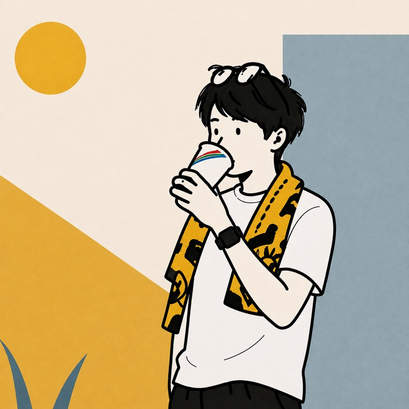

フリーランスの IT エンジニアとして、企業の情報システム部門を支える BPO を専門に活動しています。情報システム部門の立ち上げ・運用改善を強みとし、Microsoft 365（Entra ID / Intune）を中心に、IT 基盤の設計・構築・運用まで一貫して対応します。
これまで 10 社以上・IT 実務 8 年以上にわたり、大手企業からスタートアップまでの情報システム部門を支援し、IT 基盤整備・端末／アカウント管理・運用標準化・セキュリティ強化を推進してきました。専任担当者が不在の企業では情シス機能そのものを代替し、現場・経営層・ベンダーとの調整を通じて、業務に定着する仕組みづくりまで担っています。
技術の話は、現場の言葉に翻訳してから渡す。リスクや懸念は、早い段階で率直にお伝えする。この2つは、どの案件でも崩さずにやってきました。
大きく3つ。この範囲であれば、日々の運用から立ち上げ・改善までまとめてお任せいただけます。単発のスポット対応から、継続的な運用代行まで対応します。
専任担当者が不在の企業では、情シス機能そのものを代替します。ヘルプデスクから運用フローの設計、オンボーディングの仕組み化、ドキュメント整備まで。業務に定着するところまでを担当します。
ID と端末の管理基盤を、要件定義から運用まで一貫して。Windows / macOS 混在環境、Autopilot によるゼロタッチデプロイ、Jamf Pro・Okta との併用構成にも対応します。
条件付きアクセスやアプリ保護ポリシーの設計によるセキュリティ強化と、プロジェクトの推進。要件整理から社内調整、ベンダー折衝、全社展開までを引き受けます。
守秘義務のため、クライアント名は伏せています。案件ごとの詳細はスキルシートに記載していますので、あわせてご覧ください。
製造、人材サービス、プロスポーツ、Web サービス、スタートアップ。業界・規模を問わず、クライアントの情シス業務を支援しています。
これまでに支援した企業数
IT 実務の通算年数
対応してきた組織規模
情シス業務の代行を軸に、Entra ID / Intune・Jamf Pro による ID・端末管理、運用設計、PMO を担当。従業員 10 名規模から 70,000 名規模まで、複数クライアントを並行して支援しています。
10 社以上を担当。MDM リプレース、Okta・Google Workspace 移行、Entra ID / Intune の全社展開、RPA 構築などを、要件定義から運用・保守まで推進しました。（2023.01 – 2024.04 は育児休業を取得）
従業員 350 名規模の事業会社で、Windows 7 EOL リプレース、クラウドサーバー構築、AD・ファイルサーバー運用、ネットワーク整備、EDR 刷新までを担当しました。
新卒で入社した販売職で約 3 年間、接客と店舗運営を経験。2017 年 3 月に IT 職へ転じ、自社システムのテクニカルサポートを担当しました。
スキルシートと同じ A / B / C の3段階で整理しています。
A＝単独で設計〜構築・運用が可能 ／ B＝実務で使用可 ／ C＝基礎知識あり
IPA（情報処理推進機構）
Microsoft
会計・コスト面の議論にも対応できます
ご一緒するうえで、私が常に守っている4つのことです。
現時点の稼働条件です。案件の内容によって調整可能ですので、まずはご相談ください。
「まだ要件が固まっていない」「何を頼めるか分からない」という段階でも構いません。現状をうかがうところから始めます。
※ 通常 1 営業日以内にご返信します。チャット（Teams / Slack 等）でのやりとりにも対応可能です。